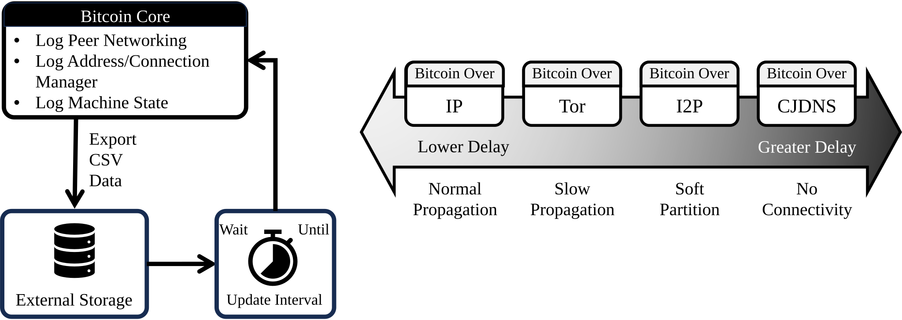
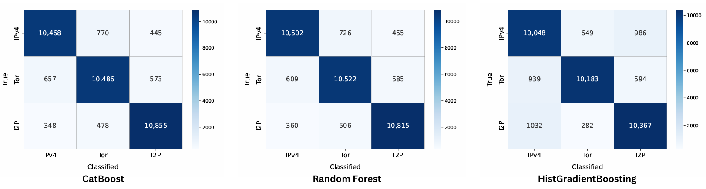

Projects
Analyzing Bitcoin Over Anonymous Routing
Data-Driven Analysis: In [1], we empirically investigate how anonymous routing affects Bitcoin by running private nodes connected to the Mainnet over IP, Tor, I2P, and CJDNS. To conduct a data-driven analysis, we build a logger that senses and collects samples every 10 seconds and generates datasets for each routing setting. The logger records multi-layer data, including: PoW consensus: block propagation time, fork length, network difficulty, etc. Network level: inbound/outbound counts, unique blocks/transactions, Bitcoin PING RTT, ICMP RTT, etc. Address manager/Connection manager: new/tried bucket state, added/removed addresses, address type, scores (e.g., fChance, isTerrible), etc. P2P protocol: message-type counts/sizes (e.g., INV, GETDATA, BLOCK, etc.). System: CPU/memory usages, network bytes/packets, etc. Using datasets, we analyze application behavior, network performance, and PoW impact under each routing setting. The results show that Bitcoin over Tor suffers slow propagation, Bitcoin over I2P causes soft partitioning (e.g., >20% mining wastage), and Bitcoin over CJDNS leads to a partitioned network (e.g., no connectivity). To the best of our knowledge, this work is the first real-world study showing that anonymous routing by itself without any attacker can cause persistent propagation delays and partition-like behavior in permissionless blockchains.

[1] Nazmus Sakib, Simeon Wuthier, Kelei Zhang, Xiaobo Zhou, and Sang-Yoon Chang. "From slow propagation to partition: Analyzing bitcoin over anonymous routing." In 2024 IEEE International Conference on Blockchain and Cryptocurrency (ICBC), pp. 377-385. IEEE, 2024.
Leveraging ML for Anonymous Networking Detection in Cryptocurrency
Proposed Solution: Building on the Mainnet datasets [1], in [2-3], we investigate how to detect the use of anonymous routing in cryptocurrency, where peers can falsely claim to use Tor or I2P. Simple profile-based detection using deterministic rules (e.g., fixed latency thresholds or IP-based rules) is vulnerable to spoofing, as adversarial peers can easily manipulate these features. To address this problem, we propose an ML-based network fingerprinting that infers how traffic is routed based on measured network behavior rather than untrusted identifiers. We use the datasets from [1] as training/testing, where the logger records routing-specific data from Mainnet runs. We train three supervised models, including Random Forest, CatBoost, and HistGradientBoosting, to learn routing-specific patterns and detect spoofed claims. Our results show that ML can reliably distinguish IP, Tor, and I2P and detect peers that falsely claim, achieving up to 93% accuracy for spoofed Tor detection and 94% accuracy for spoofed I2P detection. This enables practical anonymity-aware security mechanisms.

[2] Amanul Islam, Nazmus Sakib, Kelei Zhang, Simeon Wuthier, and Sang-Yoon Chang “Network Fingerprinting Using Machine Learning for Anonymous Networking Detection in Cryptocurrency.” IEEE 22nd Consumer Communications & Networking Conference (CCNC), pages=1-6., 2025.
[3] Amanul Islam, Nazmus Sakib, Kelei Zhang, Simeon Wuthier, and Sang-Yoon Chang. “Anonymous Networking Detection in Cryptocurrency Using Network Fingerprinting and Machine Learning.” Electronics, Vol. 14, No. 11, 2025.
Building Intelligence for Peer Evaluation Based on Networking Behavior
Proposed Solution: Building on the Mainnet peers' logs [1], in [4], we take an initial step toward building intelligence for peer evaluation by defining and quantifying peer beneficialness using observable networking behavior. We compute beneficialness directly from the logger [1]. In Bitcoin, peers implicitly compete to relay unique blocks and transactions as early as possible, and peers that consistently deliver unique information first contribute directly to faster block propagation and stronger consensus. However, Bitcoin’s current peer management mainly focuses on detecting misbehavior and does not identify peers that actively contribute to the network. Using the datasets [1], we propose a beneficialness scoring that turns networking behavior into a direct measure of peer contribution. Each peer is assigned a default beneficialness score of zero, which is incremented whenever the peer is the first to relay a unique block or transaction. To capture the dynamic nature of peer behavior and changing network conditions, we incorporate a decay mechanism that gradually reduces the influence of older contributions, ensuring that recent behavior has greater impact on the score. We implement, run, and analyze this scoring on an active Bitcoin node connected to the Mainnet under the same routing settings used in [1], showing that the score works for both non-anonymous and anonymous networking. This beneficialness score is further used as the supervised learning labels in DyPBP [5].
[4] Simeon Wuthier, Nazmus Sakib, and Sang-Yoon Chang. "Positive reputation score for bitcoin p2p network." In 2024 IEEE 21st Consumer Communications & Networking Conference (CCNC), pp. 519-524. IEEE, 2024.
Leveraging ML to Estimate Peer Beneficialness Based on Built Intelligence
Proposed Solution: In [5], we extend the peer evaluation intelligence built in [4] by applying ML to estimate beneficialness early, even before the next block arrives. This is crucial since blocks arrive roughly once every 10 minutes and many peers disconnect before a rule-based score becomes stable. We design Dynamic Peer Beneficialness Prediction (DyPBP), an ML-based approach that predicts a peer’s beneficialness continuously from networking behavior. DyPBP trains on the Mainnet peer logs and network features collected in [1] and uses the beneficialness score from [4] as the supervised learning label. DyPBP also adds a remembrance feature that keeps a peer’s state across disconnect/reconnect so the model can learn from both past and recent behavior. We implement DyPBP on an active Bitcoin node connected to the Mainnet and evaluate Linear Regression, Random Forest, and KNN. Our results show large accuracy gains; 2 to 13 orders of magnitude lower error depending on the model selection and remembrance enabled/disabled. Building on this foundation, ongoing work extends DyPBP by incorporating more expressive learning architectures, including Transformer-based models, to further improve prediction accuracy and robustness.
[5] Nazmus Sakib, Simeon Wuthier, Amanul Islam, Xiaobo Zhou, Jinoh Kim, Ikkyun Kim, and Sang-Yoon Chang “DyPBP: Dynamic Peer Beneficialness Prediction for Cryptocurrency P2P Networking.” arXiv preprint arXiv:2511.17523., 2025.
Design an Intelligence-Enabled Low-Latency Tor for Cryptocurrency
Proposed Solution: In [6], we build a Quick Tor prototype to reduce the propagation delay of Vanilla Tor observed in [1]. Quick Tor adds a latency intelligence layer on top of Vanilla Tor’s consensus directory, without changing its architecture: (1) Relay-relay latency: our running Tor middle relays periodically measure latency to entry and exit relays and publish these measurements every hour, aligned with Tor’s consensus update cycle. (2) Tor client-relay latency: each Tor client also measures its own latency to entry relays and keeps these measurements locally. (3) Threshold-based relay filtering (τ): during circuit build, the Tor client filters relays whose latency exceeds a user-chosen threshold τ, then builds circuits from the remaining relays to reduce circuit latency while preserving anonymity. We empirically implement and evaluate Quick Tor by integrating it with Bitcoin Mainnet and running PoW mining experiments where only the routing settings change (IP vs. Vanilla Tor vs. Quick Tor). We quantify the PoW impact using a latency-to-profit estimation, translating propagation delay into mining reward loss at miner. Our results show that Quick Tor improves latency by up to 43.96%, leading to annual savings of up to 500.7 million for MARA Holdings, a large mining farm.
[6] Nazmus Sakib, Kelei Zhang, Simeon Wuthier, Wenjun Fan, and Sang-Yoon Chang “Tor for Cryptocurrency: Enhancing Mining Rewards while Preserving Anonymity.” Silicon Valley Cybersecurity Conference (SVCC)., 2026. [Under Review]
Modeling Incentive-Aware P2P Connectivity in Cryptocurrency Blockchain
Proposed Solution: Building on the Mainnet dataset [1], in [7], we model how peer connectivity directly impacts PoW rewards. Using empirical propagation delays, bandwidth usage, and mining performance derived from the dataset [1], we define a utility function U(x)=R(x)−C(x), where x is the number of peer connections, R(x) captures reward gains from faster block delivery, and C(x) captures networking and energy costs. The model shows that increasing connectivity improves rewards but exhibits diminishing returns, leading to a finite optimal number of connections for rational miners. Applying the model to the active Mainnet prototypes demonstrates that the optimal connectivity depends on mining capability (e.g., GPU vs. ASIC). This work connects real-world Mainnet measurements with incentive-driven networking control and provides a foundation for adaptive and ML-based connectivity optimization.
[7] Sang-Yoon Chang, Nazmus Sakib, Simeon Wuthier, and Keith Paarporn. "Analyzing and Modeling Connection Impact on Distributed Consensus in Cryptocurrency Blockchain." In NOMS 2025-2025 IEEE Network Operations and Management Symposium, pp. 1-5. IEEE, 2025.
Context-Aware Personalized Recommendation Framework
Proposed Solution: In [8] and [9], we developed a hybrid scholarly recommendation engine supported by an intelligent data pipeline to crawl, preprocess, and structure scholarly metadata, generating citation-matrix and citation-graph datasets from publicly available sources. We applied Information Retrieval, Recommender Systems, and Data Mining techniques to integrate metadata-driven feature engineering (title, keywords, abstract) with multi-level citation-context modeling (hidden relationship). By combining semantic similarity (TF–cosine) and citation-context similarity (Jaccard-based measures) within a unified fusion framework, the proposed approach mitigates cold-start and sparsity challenges without relying on priori user profiles. Experimental results demonstrate improved recommendation accuracy across standard IR metrics.
[8] Nazmus Sakib, Rodina Binti Ahmad, and Khalid Haruna. "A Collaborative Approach Toward Scientific Paper Recommendation Using Citation Context." IEEE Access (2020).
[9] Nazmus Sakib, Rodina Binti Ahmad, Mominul Ahsan, Md Abdul Based, Khalid Haruna, Julfikar Haider, and Saravanakumar Gurusamy. "A hybrid personalized scientific paper recommendation approach integrating public contextual metadata." IEEE Access (2021).